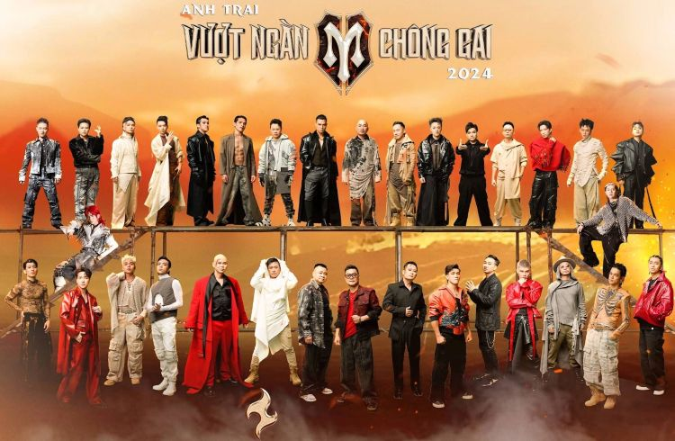
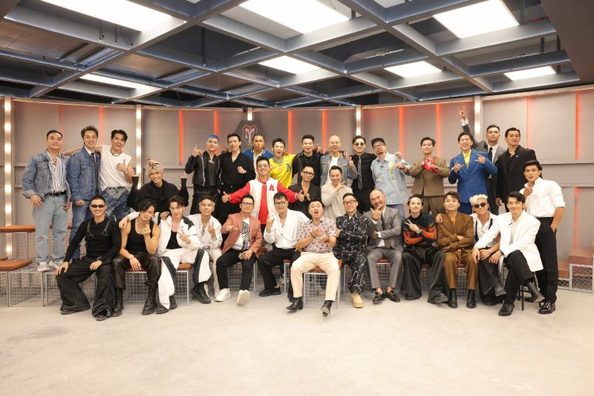

About Call Me By Fire 2024
The inspirational reality TV show Call Me By Fire 2024 – A Fiery Musical Race of Talent and Passion is set to air weekly on Saturdays at 8:00 PM on VTV3 and 8:30 PM on YeaH1 Show’s YouTube channel, starting June 29, 2024.
 Call Me By Fire promises to ignite a wave of thrilling entertainment in Vietnam, delivering visually stunning and sonically captivating musical performances on one of the country’s grandest stages. Each episode aims to inspire positivity and leave audiences enthralled with meticulously choreographed and spectacular acts.
Season 1 features an all-star lineup of artists, including Hồng Sơn, Bằng Kiều, Tự Long, Phan Đinh Tùng, Tuấn Hưng, Đinh Tiến Đạt, Phạm Khánh Hưng, Tiến Luật, Thành Trung, Đăng Khôi, Trương Thế Vinh, Hà Lê, Đỗ Hoàng Hiệp, Thanh Duy, Quốc Thiên, Binz, Cường Seven, Nguyễn Trần Duy Nhất, Jun Phạm, Neko Lê, Tăng Phúc, Thiên Minh, BB Trần, Liên Bỉnh Phát, S.T Sơn Thạch, Rhymastic, Kiên Ứng, (S)TRONG Trọng Hiếu, SOOBIN, Duy Khánh, Kay Trần, Bùi Công Nam, and HuyR.
© Call Me By Fire is produced and owned by YeaH1.